資材発注看板システム
VER3.2.0資材の看板を画面で見て、ラインは「欲しい」を出し、倉庫は「発送した」を付けます。届いたらラインが確認して、看板を元に戻します。
1. このツールでできること
- ライン(現場): 足りなくなった資材の看板を押して「欲しい」を出す。届いたら「届いた」を確認する。注文票を印刷する。
- 倉庫: 全ラインの「欲しい」を見て、発送したら「発送」を付ける。仕入れ先へ注文したときは「注文中」を付ける。発送明細を印刷する。
- 看板ごとのコメント: 「来週入ります」「急ぎです」などを、倉庫とラインでやり取りする。
画面は勝手に新しくなります。ほかのパソコンで押したことも、数秒〜30秒ほどで自分の画面に出ます。
2. 開きかたとモード
統合ツールを開きます。
統合ツールの大きなタブの看板を押します。
はじめて開くときは「起動しています」と出ます。少し待つと看板の画面になります。
看板の画面には3つのモードがあります。どのモードで開くかは、そのパソコンに決まっています。 画面の右上の札(現場モード など)で、いまのモードが分かります。
| モード | だれが使う | できること | 札の色 |
|---|---|---|---|
| 現場モード | ラインの作業者・班長 | 自分のラインの看板だけを見る。欲しい資材を押す。届いた確認。注文票の印刷。 | 赤 |
| 倉庫モード | 倉庫の担当 | 全ラインの看板をタブで切り替えて見る。発送・注文中を付ける。発送明細・非常設品リストの印刷。 | 緑 |
| 倉庫参照モード | 見るだけの人 | 見るだけ。押しても何も変わりません。 | 灰 |
3. 画面の見かた
現場モードの画面です(L-1 ラインの例)。
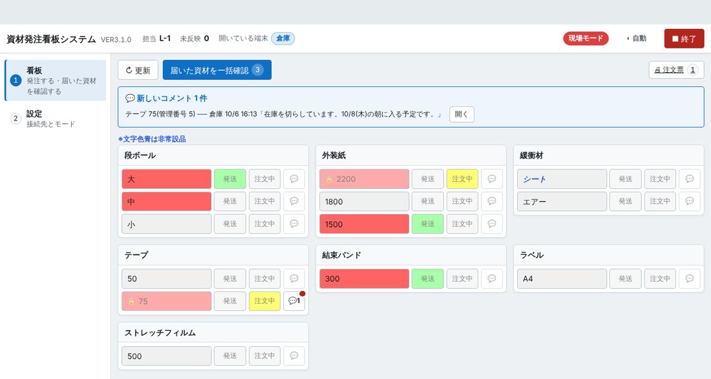
1 2 3 4 5 6 7 8 9 10 11 12 13- 左の並び … 看板(この画面)と設定を切り替えます。
- 担当・未反映 … 担当は、この画面で見ているライン。未反映は、まだ共有フォルダへ送れていない操作の数です(ふつうは数秒で 0 に戻ります)。
- 開いている端末 … いま看板を開いているほかのパソコン。現場の画面に「倉庫」と出ていれば、倉庫が見てくれています。
- モードの札 … いまのモード。押すと設定の画面が開きます。
- 画面の明るさ … 押すたびに ライト → ダーク → 自動 と変わります(最初はライト)。
- ■ 終了 … 看板を終わります(統合ツールごと閉じます。10. 終わるとき)。
- ↻ 更新 … 今すぐ新しい内容を読み直します。ふだんは押さなくても新しくなります。
- 届いた資材を一括確認 … 赤と緑が両方付いている看板を、まとめて元に戻します。数字は対象の枚数です。
- 🖨 注文票 … まだ発送されていない「欲しい」の一覧を印刷します。
- 新しいコメントの帯 … 倉庫からコメントが来たときだけ出ます。開くで読めます。
- 資材の枠 … 資材(段ボール・外装紙・テープなど)ごとに1つの枠です。中にサイズが並びます。
- サイズのボタン(看板) … 現場モードで押すのはここです。色で状態が分かります(次の節)。
- 💬(コメント) … その看板のやり取りを読む・書くボタン。赤い点は「まだ読んでいないコメントがある」印です。
サイズのボタンの右の「発送」「注文中」は、現場モードでは色を見るだけのところです(押せるのは倉庫です)。 ボタンにマウスを乗せると、発注した時刻・発送した時刻などが出ます。
4. 看板の色の意味
| 見え方 | 意味 | 次にだれが何をする |
|---|---|---|
| 大 | 何も出ていない | 足りなくなったら、ラインが押す |
| 大 | 欲しい(ラインが発注した) | 倉庫が発送する |
| 大 + 発送 | 倉庫が発送した | 物が届いたら、ラインが「届いた」を確認する |
| 🔒 大 + 注文中 | 注文中(倉庫に在庫が無く、仕入れ先へ注文した) | 入ってきたら倉庫が発送する。この間、ラインは赤を消せません(🔒) |
| シート | 文字が青い斜めの字 = 非常設品(いつも置いていない資材) | 押し方は同じ |
色の意味は、前の Excel の看板と同じです。
5. 毎日の操作(現場モード)
流れは 看板を見る → 欲しいものを押す → 倉庫が発送する → 届いたら確認 です。
5-1. 看板を見る
統合ツールの大きなタブの看板を押すと、担当ラインの看板が出ます。開いたままにしておけば、勝手に新しくなります。
5-2. 欲しい資材を押す(赤を付ける)
足りなくなった資材の枠で、サイズのボタン(例: 段ボールの大)を1回押します。
ボタンが赤になれば、出せています。倉庫の画面にも数秒で赤が出ます。
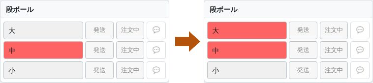
左: 押す前 → 右: 押した後(「大」が赤になった)
5-3. 届いたら確認する(1枚ずつ)
倉庫が発送すると、赤の横の「発送」が緑になります。物が届いたら、看板を元に戻します。
物が届いているのを確かめます。
赤と緑が付いている看板のサイズのボタン(赤)を押します。
「この資材は届いていますか？ [OK]を選択すると、発注状態と発送状態の両方がクリアされます。」と出ます。OKを押します。
赤と緑が消えて、灰色に戻ります。
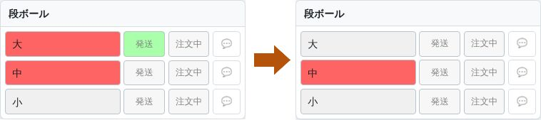
左: 赤と緑(発送された)→ 右: 届いた確認のあと(元に戻った)
5-4. 届いたものをまとめて確認する
赤と緑が付いている物が全部届いていることを確かめます。
上の届いた資材を一括確認を押します(数字は対象の枚数。0 のときは押せません)。
「○ 件の資材到着を確認し、表示を元に戻しますか？」と出ます。OKを押します。
右下に「○ 件をリセットしました」と出て、赤と緑が両方付いていた看板が全部、灰色に戻ります。
5-5. 注文票を印刷する
上の右の🖨 注文票を押すと、別の画面に注文票(まだ発送されていない「欲しい」の一覧)が出ます。 直し方・印刷のしかたは 7-1. 印刷する を見てください。
5-6. 倉庫からのコメントを読む
倉庫がコメントを書くと、画面の上に「💬 新しいコメント 1 件」の帯が出て、その看板の 💬 に赤い点が付きます。 帯の開くか、看板の 💬 を押すと読めます。読んだら閉じるを押します。
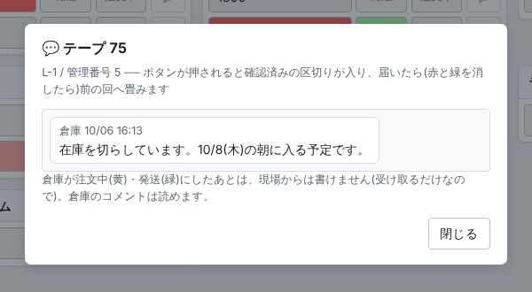
- 現場がコメントを書けるのは、赤を付けたあと、倉庫がまだ黄・緑を付けていない間です(例: 「月曜朝に使うので急ぎでお願いします」)。書いたら送る(現場として)を押します(Ctrl+Enter でも送れます。1件 200 文字まで)。
- 相手のコメントを読まないまま看板を押すと、先に「💬 相手からのコメントがあります」の小さな画面が出ます。読んで確認して進めるを押します。押すのをやめるときはやめる。
6. 毎日の操作(倉庫モード)
倉庫モードでは、全ラインの看板をタブで切り替えて見ます。押せるのは「発送」と「注文中」です(サイズのボタンは見るだけ)。
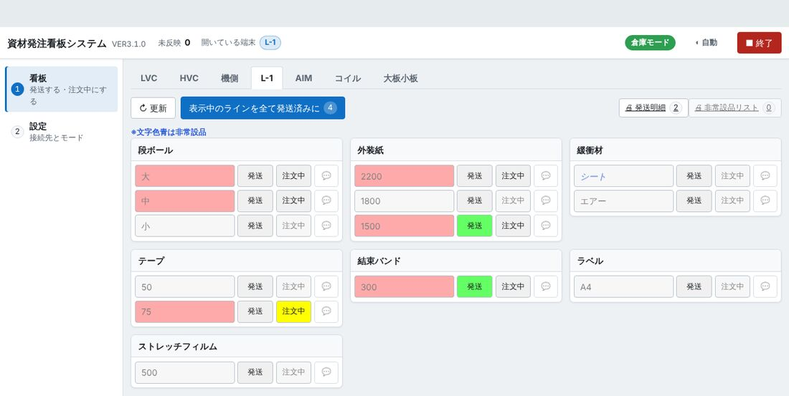
1 2 3 4 5 6 7 8 9 10- ラインのタブ … 見るラインを切り替えます。選んでいるタブが白くなります。
- 開いている端末 … いま看板を開いているラインのパソコン(例: L-1)。
- モードの札 … 倉庫モードは緑の札です。
- 表示中のラインを全て発送済みに … 選んでいるラインの、まだ発送していない「欲しい」をまとめて発送済みにします。
- 🖨 発送明細 … 発送した物(赤と緑が付いている物)の一覧を印刷します。
- 🖨 非常設品リスト … 「欲しい」が出ている非常設品の一覧を印刷します。
- サイズ … ラインが出した「欲しい」は赤で出ます(倉庫モードでは見るだけ)。
- 発送 … 発送したら押します。緑になります。
- 注文中 … 在庫が無く、仕入れ先へ注文したら押します。黄になります。赤が付いている看板だけ押せます。
- 💬 … その看板のコメントを読む・書く。
6-1. 発送する
統合ツールの大きなタブの看板を押します。倉庫モードの画面が出ます。
上のラインのタブ(例: L-1)を押します。赤いサイズが「欲しい」です。
資材を用意して出したら、その看板の発送を押します。緑になります。ラインの画面にも数秒で緑が出ます。
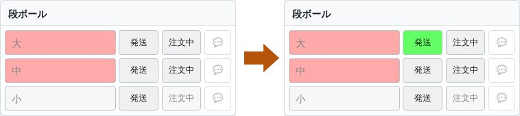
左: 押す前 → 右: 発送を押した後(緑になった) 選んだラインの「欲しい」を全部出したときは、1つずつ押す代わりに表示中のラインを全て発送済みにを押してもかまいません。 「このラインの未発送品 ○ 件を、まとめて発送済みにしますか？」と出るのでOKを押します。
必要なら🖨 発送明細を押して印刷し、資材と一緒に渡します(7-1)。
6-2. 在庫が無いとき(注文中にする)
仕入れ先へ注文したら、その看板の注文中を押します。黄になります。
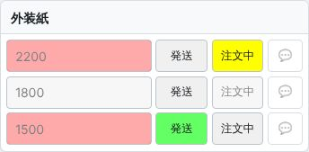
外装紙 2200 を注文中にしたところ 💬 を押して、入る見込みを書いておくとラインに伝わります(例: 「10/8(木)の朝に入る予定です」)。書いたら送る(倉庫として)を押します。
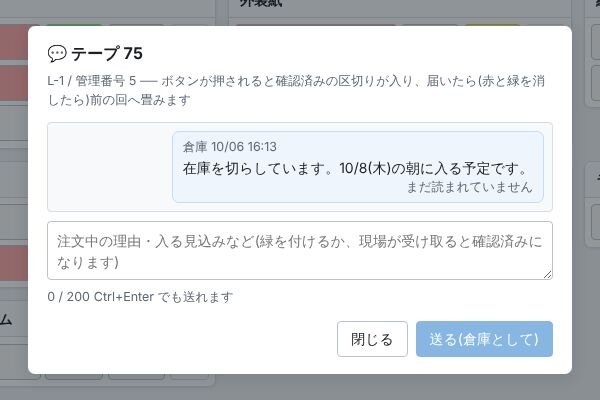
倉庫からコメントを書いたところ。ラインが読むと「✓ 既読」に変わります 物が入ったら、いつもどおり発送を押します。注文中(黄)は自動で外れます。
7. そのほかの操作
7-1. 印刷する(注文票・発送明細・非常設品リスト)
🖨 注文票(現場)・🖨 発送明細・🖨 非常設品リスト(倉庫)を押すと、 別の画面に印刷する前の確認が出ます。ここでそのまま書き直せます。
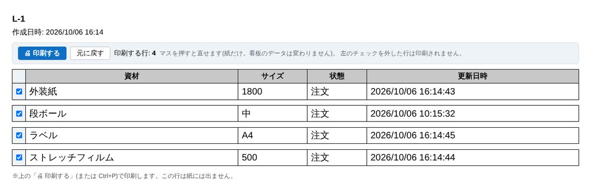
1 2 3 4- 🖨 印刷する … 印刷の画面が出ます。プリンターを選んで印刷します。
- 元に戻す … 書き直したところを、はじめの内容に戻します。
- 左のチェック … 外した行は印刷されません。
- マス … 押すと数や資材名を書き直せます。直したマスは黄色くなります。
印刷するものが無いときは「印刷する明細はありません。」と出ます。
7-2. 新しくするには
何もしなくてかまいません。開いたままでも、自分の操作はすぐ、ほかのパソコンの操作は数秒〜30秒ほどで画面に出ます。 すぐ確かめたいときは↻ 更新を押します。
7-3. 画面の明るさ
右上の明るさのボタンを押すたびに、☀ ライト → ☾ ダーク → ◐ 自動(Windows の設定に合わせる)→ ライト と変わります。最初はライトです。看板の赤・緑・黄の色は、ダークでも同じです。
8. 設定
左の並びの設定で開きます。ふだんの作業では触りません。パソコンを入れたときや、ラインが変わったときに、班長・管理者が使います。
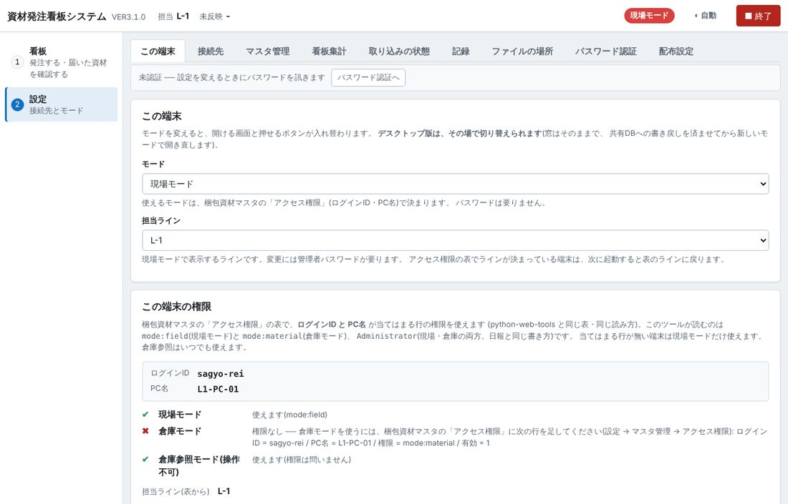
1 2 3 4 5 6 7- 設定のタブ … 用ごとに9つに分かれています(下の表)。
- 認証の状態 … 「未認証」のときは、守られた設定を変えるときに管理者パスワードを訊かれます。
- モード … 現場モード・倉庫モード・倉庫参照モードを選びます。使えないモードには「(権限なし)」と出ます。パスワードは要りません。
- 担当ライン … 現場モードで見るライン。変えるには管理者パスワードが要ります。
- この端末の権限 … このパソコンのログインID と PC名。
- 使えるモード … ✔ は使える、✖ は使えないモード。使えないときは、何を登録すればよいかが出ます。
- 担当ライン(表から) … アクセス権限の表で決まった担当ライン。
| タブ | 何をするところか | パスワード |
|---|---|---|
| この端末 | モードと担当ラインを変える。この端末の権限を見る | 担当ラインを変えるときは要る |
| 接続先 | 共有フォルダの置き場所・取り込みの間隔などを変える | 要る |
| マスタ管理 | 看板を増やす・減らす・資材名やサイズを直す。アクセス権限の行を足す・直す | 直すときは要る(見るだけなら要らない) |
| 看板集計 | 出した回数・届くまでの日数などを出す。CSV に書き出す | 要らない |
| 取り込みの状態 | ↻ いま取り込む・まだ送れていない操作を見る | 片付けるときは要る |
| 記録 | エラーの記録を探す・なぜなぜ分析シートを作る | 要らない |
| ファイルの場所 | 使っているファイルの置き場所を見る(問い合わせのとき) | 要らない |
| パスワード認証 | 管理者パスワードで認証する・決める・変える | — |
| 配布設定 | 1台で決めた設定をほかのパソコンへ配る | 要る |
モードを変えるとき
設定 → この端末 の「モード」で、使うモードを選びます。
「○○モードに切り替えます。…いま切り替えますか？」と出たらOKを押します。書き戻しを済ませてから、看板のタブがそのモードで開き直します。 (キャンセルなら、次に開いたときから切り替わります。)
9. 困ったとき
| こうなった | こうする |
|---|---|
| サイズのボタンを押しても変わらない(🔒 が付いている) | 倉庫が「注文中」にしている看板です。倉庫が発送するか、注文中を外すまで変えられません。急ぐときは 💬 か口頭で倉庫へ。 |
| 「注文がありません。…」と出る(倉庫) | ラインがまだ赤を付けていない看板です。発送・注文中は、赤が付いている看板だけ押せます。 |
| 「💬 相手からのコメントがあります」と出て押せない | 先にコメントを読みます。読んで確認して進めるを押すと、押したことになります。 |
| 赤い帯「発送処理中に注文が取り消されました」が出た | 倉庫が発送したのと同じころに、ラインが赤を消しました。現場: 資材を確かめてから、帯の確認したを押します。必要ならそのあとで出し直します。倉庫: 何もしなくてかまいません(現場の確認待ち)。 |
| 上の帯に「⚠ 取り込めていません ○分前」と出る | 共有フォルダに届いていません。ネットワークにつながっているか確かめて、班長・管理者に知らせてください。押した操作はパソコンに残り、つながれば送られます。 |
| 「未反映」の数が減らない | 設定 → 取り込みの状態 → ↻ いま取り込むを押します。それでも減らなければ管理者へ。 |
| 「共有DBに 看板_○○ がありません」と出る | そのラインの看板の表が共有フォルダに見つかりません。押しても届かないのでボタンが止まります。管理者に知らせてください。 |
| 開いている端末に「HVC?」のように ? が付いている | そのパソコンが正しく閉じられなかった印です。そのパソコンで看板を開いて、普通に終了すれば消えます。放っておいても害はありません。 |
| 倉庫モードで開きたいのに現場モードで開く | このパソコン(またはログインID)に倉庫モードの権限がありません。設定 → この端末の「この端末の権限」に、足す行が出ます。管理者に登録を頼んでください。 |
| エラーが出た | 文の最後の「記録番号 R-…」を控えて、管理者に伝えてください。 |
| 看板のタブが「理由の画面」になった(止まった) | 画面のもう一度開くを押します。看板だけが開き直します(ほかのタブはそのまま)。 |
| 画面が古いままに見える | ↻ 更新を押すか、F5 を押します(F5 は看板のタブだけ読み直します)。 |
「この画面では操作できません」と出たとき
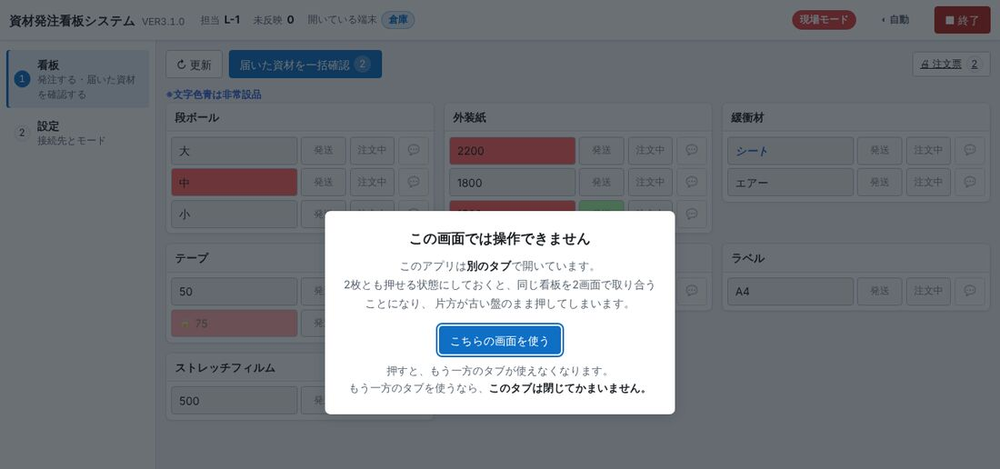
同じパソコンで看板の画面を2つ開いています。押せるのは1つだけです。この画面を使うならこちらの画面を使うを押します(もう一方が使えなくなります)。 もう一方を使うなら、この画面は閉じてかまいません。放っておいてもデータには何もしません。
10. 終わるとき
統合ツールの右上の終了を押します。看板の画面の■ 終了を押しても、統合ツール全体が閉じます。
まだ共有フォルダへ送れていない操作があるときは、送り終えてから閉じます。確認が出たら、内容を読んで答えてください。
資材発注看板システム VER3.2.0 の操作説明書です。統合ツールの「説明書」ボタン(F1)から、いま開いているタブの説明書を開けます。 写真の名前・ライン・資材・コメントは説明のための例です。